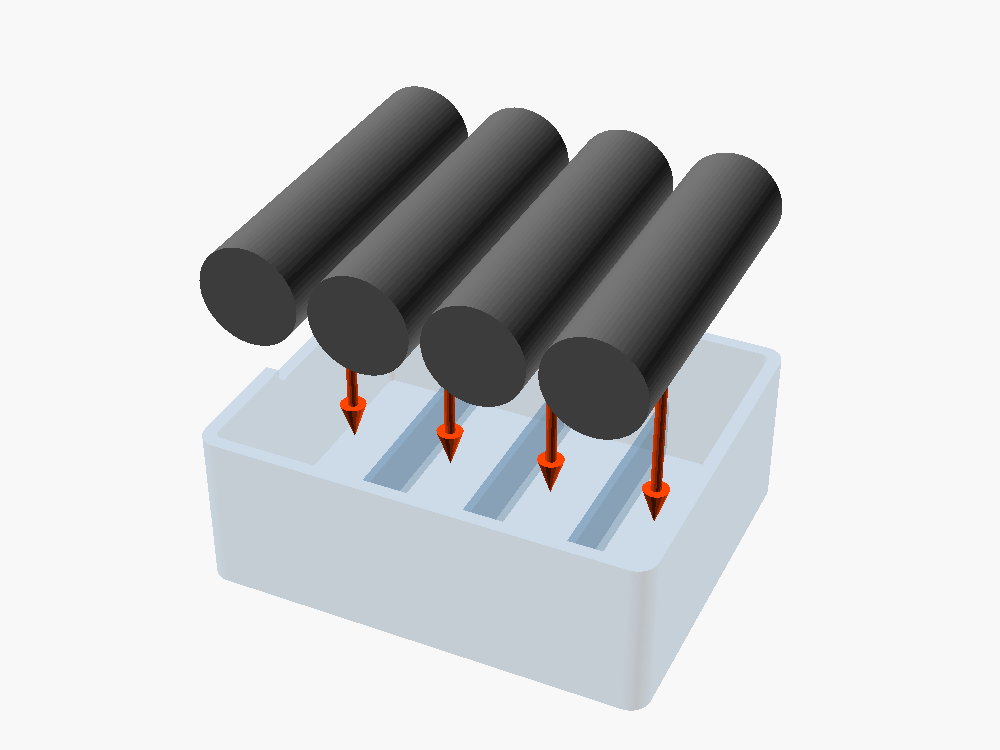
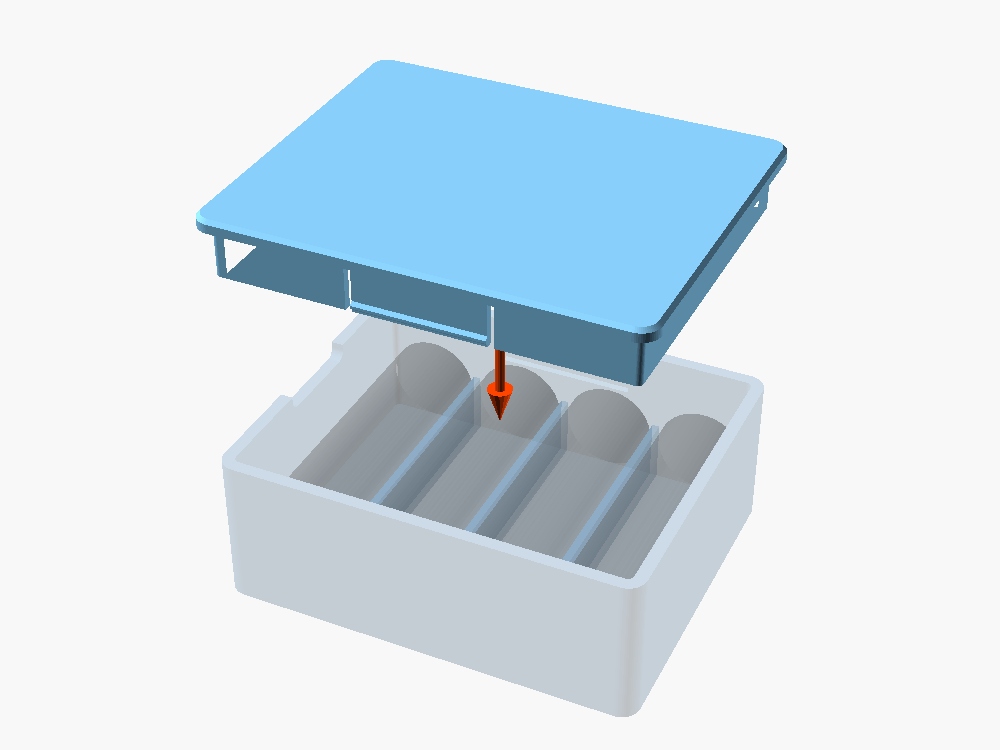

Lo que necesitás y cuánto cuesta
Todos los componentes tienen precio verificado.
Precios de tiendas argentinas, verificados entre 2026-10-06 y 2026-10-06. Tipo de cambio: US$ 1 = $ 1.540 (Dólar oficial (venta), DolarApi, 2026-10-05). Los precios cambian: confirmalos antes de comprar.
| Cant. | Componente | Precio y fuente | Subtotal | |
|---|---|---|---|---|
| Filamento | ||||
| 40 g | filamento PETG de 1,75 mm (caja ≈ 25 g y tapa ≈ 12 g)Rollo de 1 kg. La página no confirma el stock. 40 g es la estimación por volumen de los STL: el laminador da el valor exacto | $ 21.100 cada 1000 gPrintalot, 2026-10-06 | $ 21.100US$ 13,70 | |
Primeros pasos
- Imprimir la tapa (sección 1): es la pieza chica y la que lleva las pestañas.
- Imprimir la caja (sección 1).
- Probar el encastre sin pilas: cerrar y abrir la tapa un par de veces (sección 3).
- Cargar las pilas y cerrar siguiendo los pasos de la sección 2.
1. Especificaciones de Impresión 3D
| Pieza | STL | Cant. | Orientación (cara sobre la cama) | Relleno | Perímetros | Soportes | Adherencia |
|---|---|---|---|---|---|---|---|
| Caja | caja_pilas_caja.stl | 1 | Base (abertura hacia arriba), tal como viene el STL | 20 % rejilla | 3 | No | Ninguna |
| Tapa | caja_pilas_tapa.stl | 1 | Cara exterior (pollera hacia arriba), tal como viene el STL | 20 % rejilla | 3 | No | Ninguna |
Configuración común del laminador: capa de 0,2 mm, ancho de línea de 0,4–0,45 mm, 4 capas superiores y 4 inferiores. Con 2 mm de pared y 1,2 mm de pollera las piezas salen prácticamente macizas: el relleno solo afecta a una parte mínima. No hace falta borde (brim): los bordes de las dos caras sobre la cama tienen un chaflán de 0,6 mm que absorbe la "pata de elefante".
Material recomendado: PETG (boquilla 230–245 °C, cama 70–80 °C). Las pestañas se doblan 1,38 % al cerrar, por debajo del 1,5 % que el PETG admite en uso repetido. El PLA es más rígido y admite ≈ 1 %: si se imprime en PLA, bajar saliente_reborde a 0,35 mm antes de exportar (sección 4).
2. Ensamblaje y Lista de Materiales (BOM)
Herrajes / Tornillería Requerida
La lista completa, con precios y dónde comprar, está en Lo que necesitás y cuánto cuesta.
No lleva tornillería ni componentes comprados: las 4 pilas AA son lo que se guarda.
Herramientas
- Ninguna. Si en las ranuras de las pestañas queda un hilo de plástico, cortarlo con un cúter.
Instrucciones Paso a Paso
En cada imagen, las piezas de ese paso van en color y la flecha naranja muestra hacia dónde se mueven para colocarlas. Lo que ya está armado se ve transparente.
- Colocar las pilas. Apoyar la caja con la abertura hacia arriba y bajar una pila AA en cada alojamiento, acostada y desde arriba. Entran por su peso; si una no entra, ver la sección 3.

- Cerrar la tapa. Apoyar la tapa con la pollera hacia abajo sobre la boca de la caja (entra en cualquiera de sus dos orientaciones) y empujarla desde arriba con el pulgar, en el centro, hasta sentir el "clic" de las dos pestañas. La tapa queda al ras del borde.

- Abrir la caja. Meter la uña en la muesca de la pared corta, debajo del borde de la tapa, y levantar. Para vaciarla, dar vuelta la caja abierta sobre la mano: las pilas caen solas.
3. Puesta a punto
Probar el encastre con la caja vacía, cerrando y abriendo la tapa.
| Síntoma | Causa probable | Qué hacer |
|---|---|---|
| La tapa cierra muy dura o una pestaña se marca de blanco | Reborde demasiado alto para esta impresora o material más rígido | Bajar saliente_reborde en 0,05 mm y regenerar los dos STL |
| La tapa no hace "clic" o se abre sola al sacudir | Reborde bajo o impresora que "adelgaza" las piezas | Subir saliente_reborde en 0,05 mm (hasta 0,55 mm en PETG) y regenerar los dos STL |
| La pollera no entra o roza todo el contorno | La impresora "engorda" las piezas | Medir la impresora con el peine de calibración y cargar los valores en src/perfil_impresora.scad (skill pieza-openscad, calibracion.md) |
| Una pila no entra en su alojamiento | Pila fuera de norma o caja que "engorda" | Medir la pila y subir diametro_pila o largo_pila |
saliente_reborde cambia el reborde de la tapa y la ranura de la caja, por eso hay que reimprimir las dos piezas. El generador rechaza los valores que harían doblar la pestaña más de 1,5 %.
Prueba de aceptación: con las 4 pilas y la tapa cerrada, sacudir la caja con fuerza: la tapa no se abre y ninguna pila pasa al alojamiento de al lado.
4. Adaptación a tus componentes
Editar src/caja_pilas_parametros.scad (o usar el Customizer de OpenSCAD) y regenerar los dos STL con los mismos valores:
.tools/bin/openscad -o exports/caja_pilas_caja.stl src/caja_pilas_caja.scad.tools/bin/openscad -o exports/caja_pilas_tapa.stl src/caja_pilas_tapa.scad| Parámetro | Por defecto | Rango | Para qué |
|---|---|---|---|
cantidad_pilas | 4 | 1 – 10 | Otra cantidad de pilas en la fila (6 pilas: 99,4 mm de largo) |
diametro_pila, largo_pila | 14,5 / 50,5 mm | 8 – 20 / 30 – 70 mm | Otro tamaño: AAA = 10,5 / 44,5 mm |
espesor_pared, espesor_piso | 2,0 / 2,0 mm | 1,6 – 4 / 1,2 – 4 mm | Una caja más robusta |
saliente_reborde | 0,5 mm | 0,3 – 0,8 mm | Dureza del encastre (sección 3) |
alto_tabique | 10 mm | 4 – 20 mm | Tiene que superar el juego vertical de la pila (8,4 mm por defecto) |
Si una combinación es imposible, OpenSCAD se detiene con un mensaje que nombra el parámetro y su límite: pared demasiado fina para la ranura, pestaña que se doblaría de más, tabique que la pila podría saltar o caja que no entra en la cama.
5. Seguridad
Los tabiques separan las pilas, así que sus bornes no se tocan entre sí. La caja no es estanca: no guardar pilas hinchadas, golpeadas o con pérdidas.
6. Consejos y buenas prácticas
- Imprimir en PETG. Las pestañas trabajan cerca del límite del PLA; en PLA, bajar
saliente_rebordea 0,35 mm (sección 1). - Imprimir la tapa primero y probar el encastre vacío. Así se ajusta
saliente_rebordeantes de cargar pilas (Primeros pasos y sección 3). - Regenerar siempre las dos piezas juntas. La ranura de la caja y el reborde de la tapa salen del mismo parámetro (secciones 3 y 4).
- Cerrar empujando en el centro de la tapa. Las dos pestañas están en el centro de los lados largos y enganchan a la vez (sección 2, paso 2).
- Vaciar dando vuelta la caja. Es más rápido que sacar las pilas de a una (sección 2, paso 3).
Ficha técnica del diseño
⚠️ Holguras por defecto, no medidas. El encastre usa valores genéricos para FDM con boquilla de 0,4 mm (
perfil_medido = falseensrc/perfil_impresora.scad). Si la tapa sale dura o floja, ajustar como indica la sección 3.
| Archivo | Uso |
|---|---|
exports/caja_pilas_caja.stl y exports/caja_pilas_tapa.stl | Piezas listas para el laminador (valores por defecto) |
src/caja_pilas_parametros.scad | Medidas compartidas: el único archivo que hay que editar para adaptar el diseño (sección 4) |
src/caja_pilas_caja.scad y src/caja_pilas_tapa.scad | Una pieza por archivo |
src/caja_pilas_ensamblaje.scad | Vista del conjunto con comprobaciones del encastre (no se imprime) |